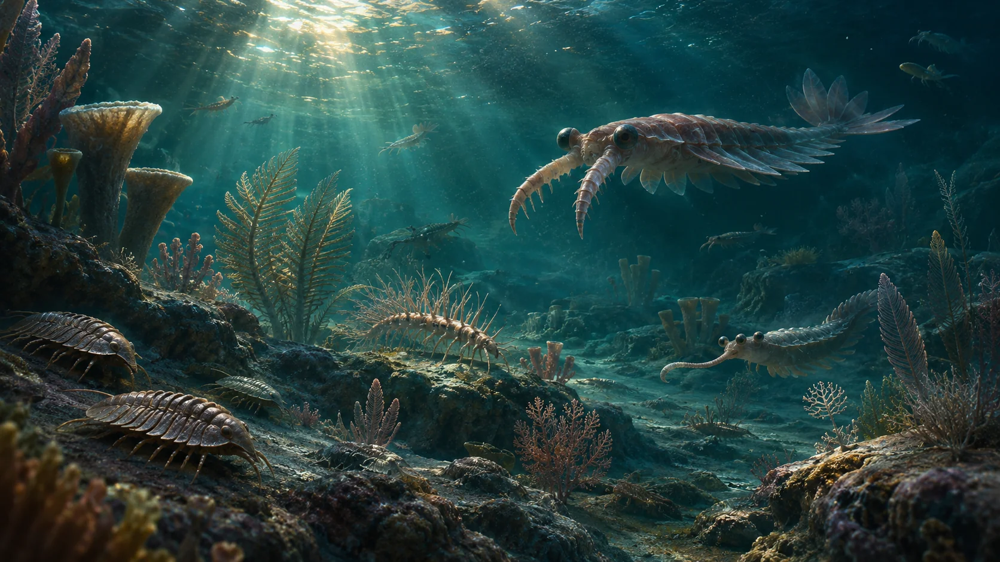

AI 生成藝術復原圖 · 非化石證據
AI 生成藝術復原圖 · 非化石證據
古海展廳 / CAMBRIAN OCEANAI 生成藝術復原圖 · 非化石證據
THE LIVING ARCHIVE
讓遙遠的生命，
留下可以追尋的線索。
這是一座持續生長的數位自然史展覽。從形態到生態，每一篇介紹都以可追溯的資料為起點，也為尚未解開的問題保留位置。
EXPLORE THE COLLECTION
走進史前世界
EVIDENCE & IMAGINATION
復原是一扇窗，化石才是線索。
本展覽會明確區分研究證據、科學推論與藝術復原。圖片屬藝術詮釋，不應視為真實化石影像或已證實的生態細節。
AI 生成藝術復原圖 · 非化石證據。使用者提供的 AI 生成藝術復原圖：寒武紀海洋生態場景。原始檔：cambrian-ocean-hero.png；非真實化石影像，形態與生態細節包含藝術想像。 作者：使用者提供；生成工具與模型未註明；授權：使用者提供供本專案使用；未提供額外再授權條款